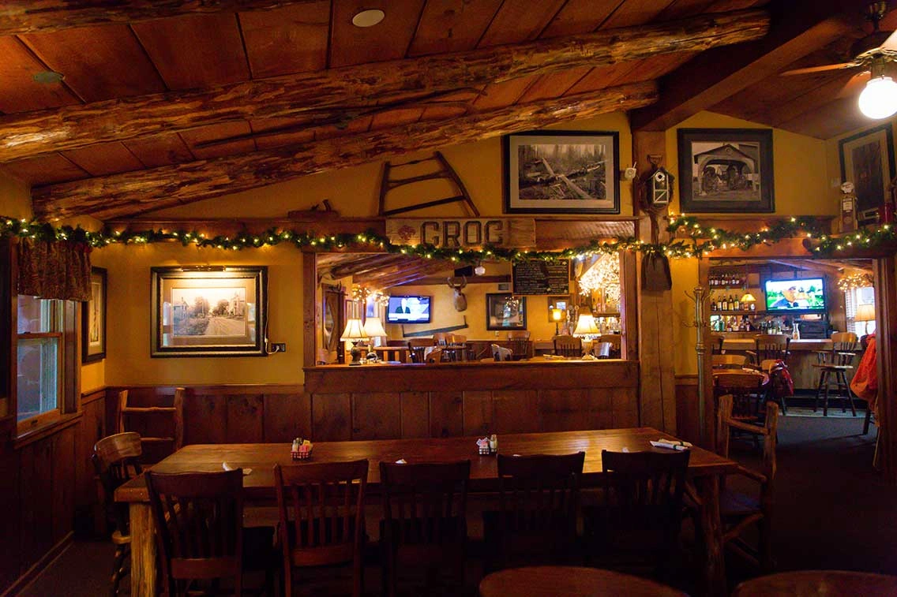

Richfield has nearly three dozen places to eat within a ten mile radius of the village. There are a few chain resturaunts, but the majority are locally own establishments. Food cuisine varies from numerous ethnic backgrounds to American sit down to fast food style. You can choose drive thru to casual dining, to formally waited tables.You can find resturaunts open from breakfast to late night snacks. There is surely a resturaunt to meet anyone's taste.
